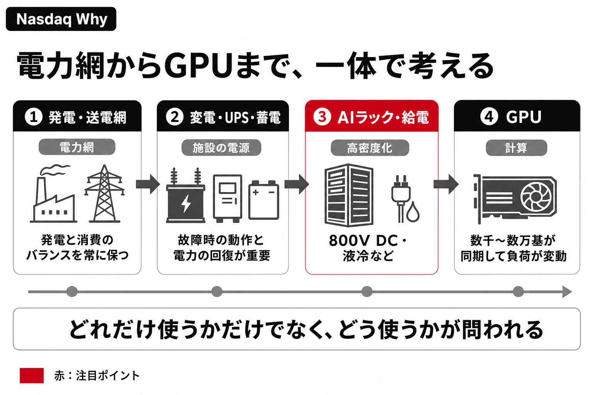
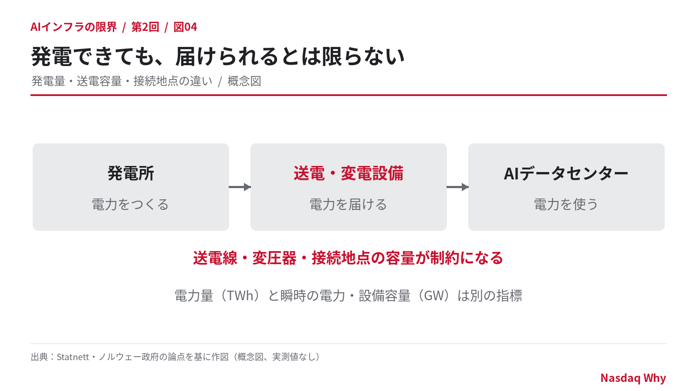
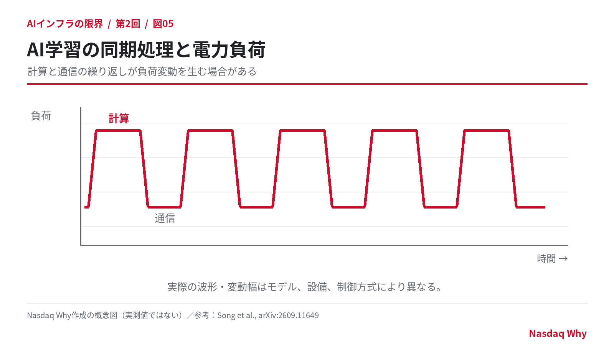
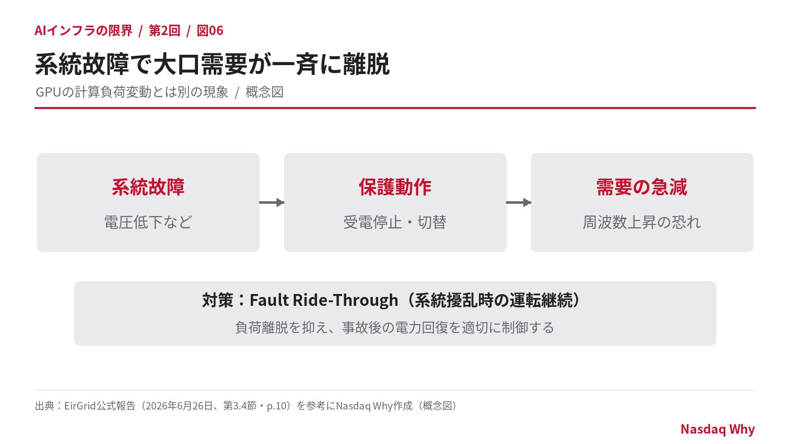

AIインフラの限界 第2回
電力不足だけではない――AIデータセンターが電力網を揺るがす理由
480MW。 2026年6月6日、アイルランドで送電設備の故障に伴い、データセンター需要が一斉に減少した。 その規模は、当時のデータセンター総需要の約52%に相当する。 アイルランドの送電網運営会社EirGridが2026年6月26日に公表した報告書によると、この事例は同社がそれまでに経験した系統故障に伴うデータセンターの需要減少事例の中で最大だった。 電力を大量に消費するデータセンターが、突然、電力を使わなくなる。 電力不足が問題となっている中で、なぜ消費電力の減少が電力網にとって危険なのだろうか。 ここに、AIインフラの拡大を考えるうえで重要な技術的課題がある。

1．電力は発電すればよいわけではない
電力網は、発電と消費のバランスを常に維持する必要がある。
発電量が消費量を下回れば、電力系統の周波数は低下する方向に動く。
反対に、消費量が突然減少すれば、発電側が一時的に過剰となり、周波数が上昇する方向に動く。
電力網の運営会社は、発電設備や蓄電池、需給調整の仕組みなどを利用して、このバランスを維持している。
データセンターの増加は、こうした調整に新しい課題をもたらす。

発電量を増やすこと。
送電能力を増やすこと。
電力網の安定性を維持すること。
この3つは、それぞれ異なる問題だ。
第1回で紹介したノルウェーのデータセンター規制も、発電量だけでは説明できない。
2．AIデータセンターは従来型と何が違うのか
従来型のデータセンターも、利用状況によって電力消費が変化する。
ただし、異なる利用者や処理が分散して実行されていれば、施設全体の負荷変動がある程度相殺される場合がある。
一方、大規模なAI学習では、数千、場合によっては数万基のGPUを連携させて処理を行う。
それぞれのGPUが独立して作業するのではなく、同じ学習処理のために同期して動作する。
典型的な分散学習では、次のような処理が繰り返される。
① GPUで大量の計算を実行する。
② 複数のGPU間で計算結果を交換する。
③ 計算結果を集約・同期する。
④ 次の計算処理に進む。
このような計算と通信の切り替えが多数のGPUで同時に起きると、電力消費の変化が重なる可能性がある。

図は、この仕組みを説明するための概念図であり、特定のデータセンターで測定した実際の波形ではない。
実際の変動幅や変動速度は、AIモデル、GPUの構成、通信方式、電源設備、ソフトウェア制御などによって異なる。
AI推論についても、利用量や処理の集中状況によって負荷が変動するため、常に一定の電力を消費するとは限らない。
3．電力網から半導体チップまで一体で考える
2026年9月に公開された研究論文『From Grid to Chip: Power Architecture, Stability, and Flexibility of AI Data Centers』は、AIデータセンターを電力網と相互に作用する計算システムとして捉えている。
この論文では、電力の利用可能性や系統接続容量だけでなく、ラック内部の電源、施設内の電力制御、電力網との相互作用までを一体として考える必要性が示されている。
AIの計算能力を増やすためには、半導体の性能向上だけでは不十分だ。
以下の各段階が連携する必要がある。
- GPU・CPUなどの半導体
- サーバー・AIラック
- ラックへの給電システム
- UPS・蓄電設備
- データセンター内の変電・配電設備
- 外部の送電網
- 発電設備
半導体の性能向上によってラックの電力密度が高まれば、給電、冷却、電力制御など、周辺インフラにも新たな設計が必要になる。
AI産業は、情報技術だけでなく、電力エンジニアリングの産業でもあるのだ。
4．アイルランドで発生した480MWの一斉負荷離脱
AI計算によって発生する負荷変動とは別に、電力網の故障に対するデータセンターの反応も問題になっている。
アイルランドの事例を見てみよう。
| 発生日 | データセンター需要の減少 | データセンター総需要に占める減少割合 |
|---|---|---|
| 2025年1月26日 | 321MW | 約44% |
| 2025年5月8日 | 387MW | 約52% |
| 2026年6月6日 | 480MW | 約52% |
出典：EirGrid公式報告書（2026年6月26日、第3.4節、p.10）。AEMCの2026年11月12日付資料にも同じ数値が記載されている。
3事例はいずれも、送電設備の故障に関連してデータセンター需要が減少したものだ。
EirGridの報告書によると、2026年6月6日の480MWは、同社がそれまでに経験した事例の中で最大だった。
データセンターには、停電や電圧低下が発生した場合にもコンピューターの稼働を維持するため、UPSや非常用電源などのバックアップ設備が設けられている。
施設側から見ると、バックアップ電源への切り替えは重要な保護動作である。
しかし、多数のデータセンターが同時に系統からの受電を減らした場合、電力網全体では大量の需要が突然消失することになる。

重要なのは、施設の安全を守るための動作が、電力網全体の安定性に影響する可能性があることだ。
なお、480MWという数字は一般家庭への停電規模ではない。
また、AI学習によるGPUの負荷変動がこの送電設備の故障を引き起こしたという意味でもない。
次の2つの現象を明確に区別する必要がある。
A：AIデータセンター内部の計算処理による負荷変動。
B：外部の系統故障に伴う複数施設の同時負荷離脱。
両方に対応するためには、施設内の電力制御と外部の系統運用を連携させることが重要になる。
5．データセンターにも系統を支える能力が求められる
アイルランドの規制当局CRUは、2026年9月22日、系統連系規程の改定「MPID 345」を承認した。
新しい技術要件は5週間後の10月27日に発効した。
主な内容は3つある。
【Fault Ride-Through（FRT）】
短時間の電圧低下などの系統異常が発生しても、一定条件のもとで電力網への接続を維持する能力。
【Active Power Recovery（APR）】
故障が解消した後、必要な有効電力を適切に回復させる能力。
【Rate of Change of Frequency（RoCoF）】
電力系統の周波数の急激な変化に耐える能力。
これらは、現在および将来の送電網接続需要設備を対象としている。
既存施設についても、技術要件に適合するための移行・例外承認の枠組みが設けられている。
従来、こうした系統故障時の運転継続に関する技術要件は、主に発電設備側に課されてきた。
大型データセンターの増加に伴い、電力を消費する側にも、系統の安定性を損なわない能力が求められている。
6．新たに重要になる電力制御技術
こうした課題を解決するため、AIデータセンターには従来以上の電力制御技術が必要になる。
【蓄電池・UPS】
施設内の負荷変動の一部を蓄電設備で吸収し、外部電力網から見た負荷の変化を緩和する。
ただし、UPSを設置するだけで系統安定性の問題が解決するわけではない。
系統異常時の動作や電力の回復方法を適切に設計する必要がある。
【GPUの電力制御】
GPUの動作電力や処理の実行タイミングを調整し、多数のGPUの負荷変動が同時に集中することを抑える。
AIの処理性能と電力の安定性を両立する設計が求められる。
【高電圧直流給電】
AIラックの高密度化に伴い、800V DCなどの高電圧直流給電方式が注目されている。
給電効率の向上や高密度化への対応が期待されるが、これも単独で系統の負荷変動を解決する技術ではない。
【液冷技術】
高密度AIラックから発生する熱を効率的に除去するため、液冷技術の重要性が高まっている。
冷却設備を含めた施設全体の電力効率が、AIデータセンターの運用コストや立地条件に影響する。
7．データセンターが電力網の調整に参加する時代へ
データセンターは、電力網に新しい負担をかける存在である一方、将来的には電力需給の調整に貢献する可能性もある。
例えば、比較的柔軟なAI学習処理を電力に余裕のある時間帯に移すことや、蓄電設備を利用して外部からの電力需要を調整することなどが考えられる。
電力供給に余裕のある地域へ計算処理を移す方法もある。
もちろん、すべてのAI処理にこのような柔軟性があるわけではない。
利用者への即時応答が求められる推論処理などは、処理を自由に延期できない場合もある。
AIの利用目的に応じた電力管理が必要になる。
Nasdaq Whyの視点
AIの成長を考えるとき、GPUの演算能力や消費電力が注目されてきた。
しかし、今後は電力をどれだけ消費するかだけでなく、どのように消費するかも重要になる。
GPUの高性能化、大規模クラスタ化、高密度ラック化は、電源、冷却、蓄電、変電設備、電力制御技術の重要性を高める。
これらの技術がAIデータセンターの新たな競争力につながる可能性がある。
次回は、この変化がNVIDIAなどの半導体企業、CoreWeaveなどのAIクラウド企業、そして電力設備企業の業績や投資にどのような影響を与え得るのかを分析する。
次回：電力の制約は、NVIDIAなどの半導体企業・AIクラウド・電力設備企業の業績にどう影響するのか
本記事は公開情報に基づく産業・技術動向の分析であり、特定の金融商品の購入・売却を推奨するものではありません。
出典
- EirGrid公式報告書「Fault Ride Through / Active Power Recovery / Rate of Change of Frequency – EirGrid Update including Assessment of System Service / Grid Solution Alternatives」（2026年6月26日、第3.4節、p.10）
- アイルランド規制当局CRU・MPID 345決定（2026年9月22日）
- CRU・EirGrid公開協議資料
- オーストラリア・エネルギー市場委員会（AEMC）「Improving the NEM access standards – Package 2, Rule determination」（2026年11月12日、Box 2、本文p.3）
- 学術論文「From Grid to Chip: Power Architecture, Stability, and Flexibility of AI Data Centers」
- ノルウェー政府